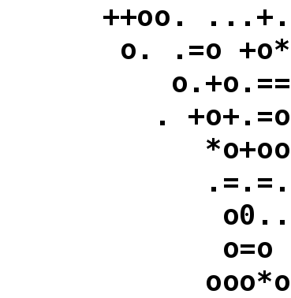
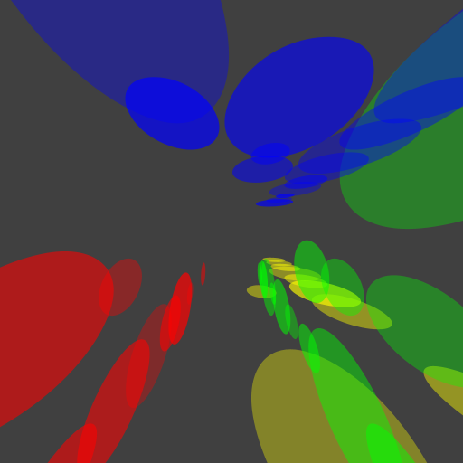

Drunken Bishop in Java

Ich habe neulich wieder einmal Lust auf eine kleine Fingerübung gehabt und deshalb ein Verfahren in Java implementiert, das ich ursprünglich als Möglichkeit kennenlernte, zwei Schlüssel beim Versuch des Aufbaus einer Verbindung mittels SSH zu vergleichen...
Dazu inspiriert wurde ich durch einen Artikel, der diskutiert, wie man die nervige Rückfrage bei der Verbindung mit einem Server vermeiden könnte, dessen Schlüssel bis dato unbekannt war oder sich seit der letzten Verbindung geändert hat: Man könnte dan aktuellen Wert des Schlüssels in einem entsprechenden DNS-Record hinterlegen (macht natürlich nur Sinn für DNSSEC).
Das erinnerte mich an etwas, das früher default bei OpenSSH aktiviert war, das man in den meisten aktuellen Distributionen allerdings explizit wünschen muss - die graphische Representation des Schlüssels als ASCII-ART mittels des Drunken Bishop Algorithmus.
Dieser Algorithmus ist sehr einfach gestrickt und kann binnem kurzen implementiert werden. Grundsätzlich und in der ursprünglichen Idee erzeugt der Algorithmus einen Text, indem die 15 unterschiedlichen numerischen Werte in einer zweidimensionalen Matrix ASCII-Zeichen zugeordnet werden. Ein Beispiel für das Ergebnis des Algorithmus mit einer Matrix der Breite 17 und der Höhe 9 analog der Originalimplementierung ist hier zu sehen:
+-----------------+
| ++oo. ...+.|
| o. .=o +o*|
| o.+o.==|
| . +o+.=o|
| *o+oo|
| .=.=.|
| o0..|
| o=o |
| ooo*o|
+-----------------+
Man kann die Visualisierung der einzelnen Werte natürlich variieren - so kann man etwa die Darstellung des Texts direkt in eine Bitmap rendern und daraus ein Bild erstellen wie hier demonstriert:

Ergebnis des Drunken Bishop Algorithmus als Bitmap-GraphikEine weitere graphische Interpretation als (etwas) psychedelischer HAL-9001-Tunneleffekt:

Alternative Darstellung des Ergebnisses des Drunken Bishop Algorithmus als Bitmap-GraphikArtikel, die hierher verlinken
MITMProxy im Docker-Zoo
02.04.2023
Es ist wieder mal ein neuer Container in meinem Docker-Zoo eingezogen


Vor 5 Jahren hier im Blog
-
Swing Inspector
01.06.2019
Ich trug mich schon länger mit dem Gedanken, ein Werkzeug zu schaffen, das den diversen Entwickler-Tools in Browsern gleichen sollte: Es sollte die Selektion von GUI-Komponenten mittels Maus ermöglichen und die Ergebnisse der Manipulation ausgewählter Komponenten sollte live - während die eigentliche Applikation normal arbeitet - möglich sein.
Weiterlesen...
Tags
Android Basteln C und C++ Chaos Datenbanken Docker dWb+ ESP Wifi Garten Geo Git(lab|hub) Go GUI Gui Hardware Java Jupyter Komponenten Links Linux Markdown Markup Music Numerik PKI-X.509-CA Python QBrowser Rants Raspi Revisited Security Software-Test sQLshell TeleGrafana Verschiedenes Video Virtualisierung Windows Upcoming...
Neueste Artikel
- Entwurfsmodus für beliebige SVG Graphiken
Nachdem ich in der Vergangenheit immer wieder Weiterentwicklungen der Idee vorgestellt habe, Graphiken mit dem Computer so zu ezeugen dass sie eine gewisse "handgemachte" Anmutung haben, habe ich nunmehr die durchschlagende Idee gehabt:
Weiterlesen... - Music of Shane MacGowan
Das ist ja auch wieder was - jetzt wo ich gerade anfangen wollte, die Pogues für mich zu entdecken kriege ich mit, dass Shane vor nem halben Jahr gestorben ist!
Weiterlesen... - sQLshell Version 7.7pre4 build 10491
Eine neue Version der sQLshell ist verfügbar!
Weiterlesen...
Manche nennen es Blog, manche Web-Seite - ich schreibe hier hin und wieder über meine Erlebnisse, Rückschläge und Erleuchtungen bei meinen Hobbies.
Wer daran teilhaben und eventuell sogar davon profitieren möchte, muß damit leben, daß ich hin und wieder kleine Ausflüge in Bereiche mache, die nichts mit IT, Administration oder Softwareentwicklung zu tun haben.
Ich wünsche allen Lesern viel Spaß und hin und wieder einen kleinen AHA!-Effekt...
PS: Meine öffentlichen GitHub-Repositories findet man hier - meine öffentlichen GitLab-Repositories finden sich dagegen hier.